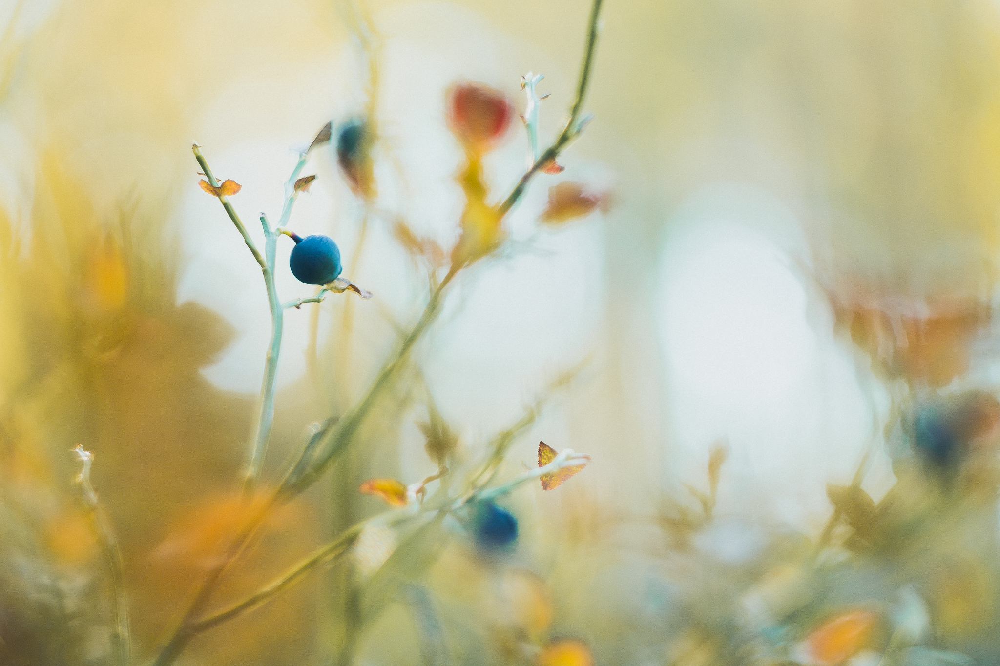

Tervetuloa Kotikokin makujamaailmaan!
Tervetuloa minun ruokablogiin, jossa tuon sinulle ruoanlaiton ja leipomisen iloa! Verkkosivuni on omistettu inspiroimaan ihmisiä nauttimaan ruoasta ja tutustumaan makujen maailmaan reseptieni ja tarinoideni avulla. Olitpa ruoan ystävä, intohimoinen kotikokki tai leipomisen ystävä, sivullani on jokaiselle jotakin.
